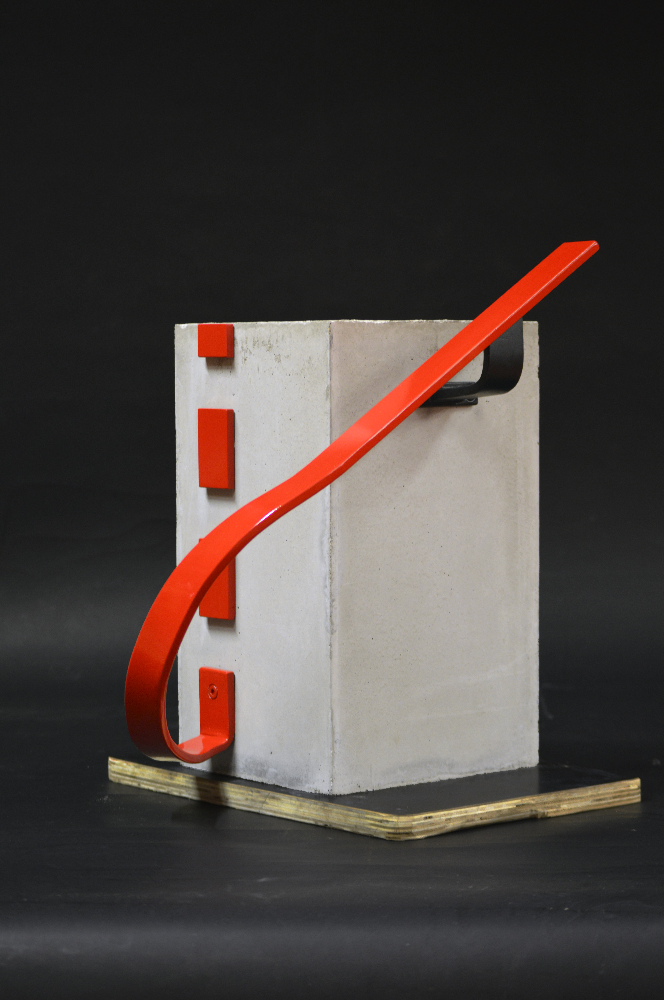
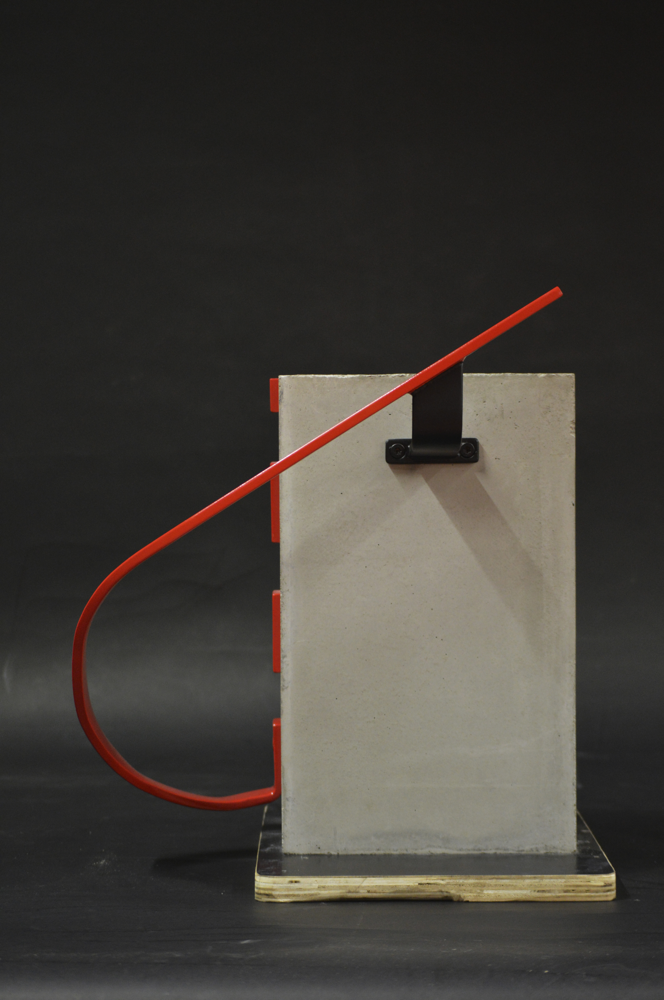

Detail ocelového madla
Ateliérový projekt zaměřený na návrh detailu ocelového madla ve výrobě značkové konfekce v Brně.

Koncept
Ocelové madlo schodiště je navrženo jako výrazný umělecký prvek v komunikačním prostoru oděvní továrny Prada. Schodiště spojuje vstupní halu, administrativní prostory, výrobní halu a terasu ve třetím patře a slouží jako klíčová komunikační trasa, tak jako vizuální středobod. V neutrálním prostředí z pohledového betonu, černých detailů a průmyslových materiálů vyniká zábradlí jako jediný červený akcent – plynulá ocelová stuha, která vede uživatele budovou.
Ocelové schodišťové madlo je navrženo z pásové oceli 8 × 40 mm a vyrobeno na míru dle výkresové dokumentace. Jednotlivé segmenty jsou spojeny svařováním v místech ohybů a broušeny do ztracena. Povrchová úprava zahrnuje antikorozní ochranu, epoxidový základ a finální polyuretanový nátěr v odstínu RAL 3002, kotevní konzoly jsou v RAL 9005. Madlo je kotveno do pohledového betonu mechanickými kotvami a po montáži je provedena kontrola stability a celkového provedení.
Foto modelu
 